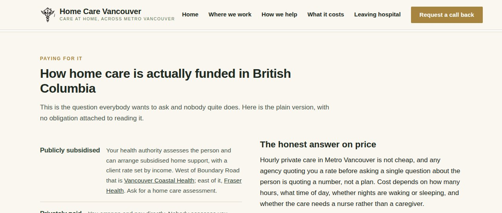
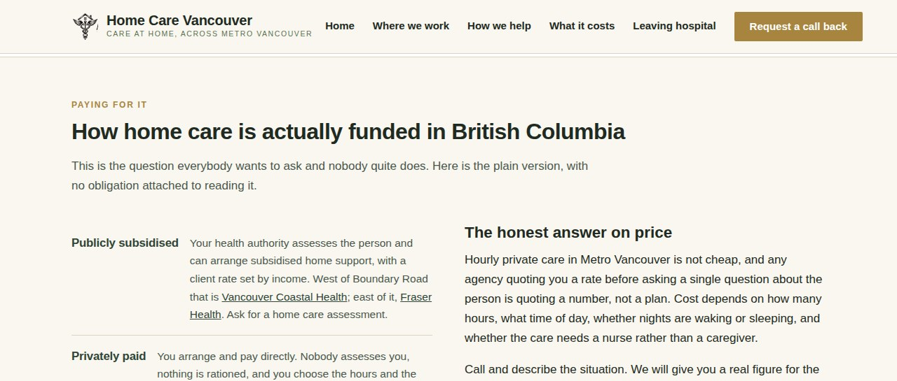

4 September.
You were pointing at a real fault, and it was the same one all three times. The red arrows on "How home care is actually funded in British Columbia", on "Across Metro Vancouver, community by community" and on "Getting home safely, from any hospital in the region" were all caused by one line in the stylesheet.
The block holding each heading was capped at about 748 pixels wide, inside a column that is 1076 pixels wide. So a heading that needed 790 pixels had 330 pixels of empty space sitting to the right of it and still broke onto a second line, leaving one word — "Columbia" — stranded on its own.
That cap belongs on the paragraph under the heading, not on the heading. A paragraph needs a limited width or it becomes hard to read across. A heading does not. It has been moved.


All five section headings now sit on one line at every desktop width from 1081 pixels up. I also checked it with the heading type scaled up by a quarter, because the font on your Windows machine is wider than the one on mine and I did not want to hand you a fix that only works here. Still one line. Phone and tablet layouts are unchanged — no sideways scroll at 360, 390, 412 or 430 pixels.
I made the same change on homecarenursing.ca. Nothing there is breaking today, but its headings only had about 15% of room to spare, and you are going to rewrite the wording — one longer heading and it would have started doing the same thing.
This one is my fault and I am sorry. On 3 September at 12:19pm Vancouver time I uploaded 61 files straight over the live site — the 57 allnursing.ca pages, the stylesheet and homecarevancouver.ca's home page. I did not check whether anything on the server had changed since I last touched it. If you saved edits before that upload, my upload wrote over them.
Here is what I can actually prove, rather than guess:
| When | What the server shows |
|---|---|
| 2 Sep, 8:58pm | I took a full copy of the live site. Every page matches my own files word for word — so no edits of yours existed yet at that point. |
| 3 Sep, 12:19–12:21pm | My upload. 61 files rewritten. |
| Since then | Nothing on the server has been written at all. Not one file has a later date on it. |
So there are only two possibilities, and they need different fixes:
If you saved your changes between about 9pm on 2 September and 12:19pm on 3 September — my upload destroyed them. Nothing I hold has them either; my own backup was taken before you started.
If you saved them after 12:19pm on 3 September — they never reached the live site in the first place, and nothing of mine touched them. That would mean the editor was saving somewhere other than the folder the site is served from, which is worth finding, because it will keep happening.
HostPapa keeps its own daily backups, separate from anything I have. In cPanel there is a Backup or JetBackup section with a file restore. If it lists a snapshot from 3 September, your edited pages will be in it. Please download the files rather than pressing a full restore — a full restore would roll the whole site back and undo the menu, blog-tab and layout fixes along with it. Send me the files and I will merge your wording in properly.
Honestly, the fastest route is probably neither: tell me the wording and I will put it in. Text and grammar changes take me minutes.
My upload script no longer sends anything blind. It now downloads the live copy of each file first, compares it against mine, and if there is a single change it does not recognise it stops and refuses to upload, saving your version to one side instead. I tested that by planting a fake edit of yours in a file — it refused, and it refused to upload the other file in the batch too rather than doing half the job.
Nothing else was changed. The wording is still yours to rewrite.